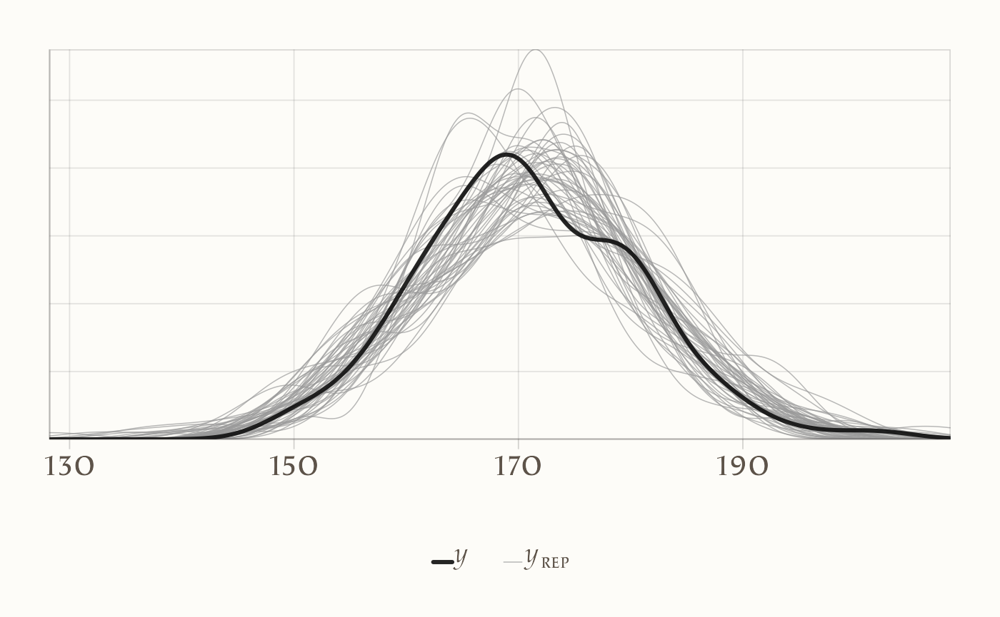
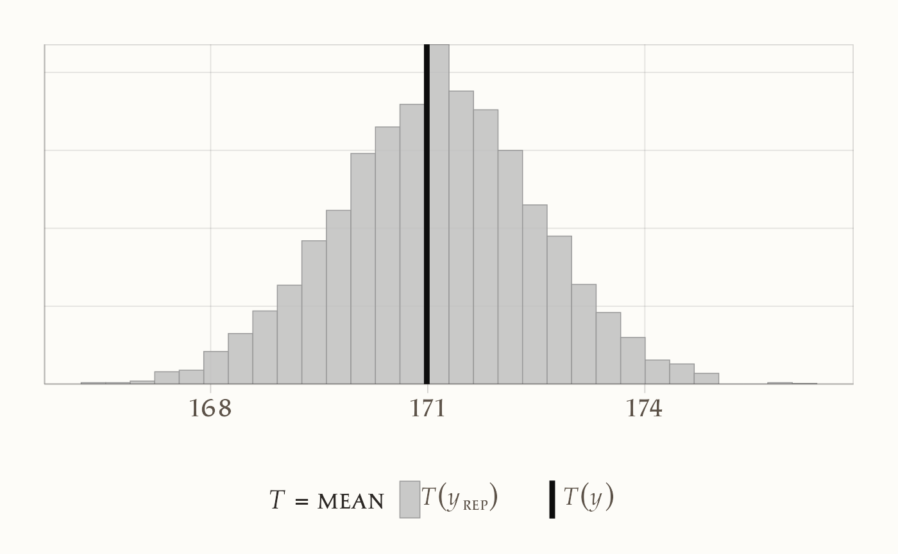
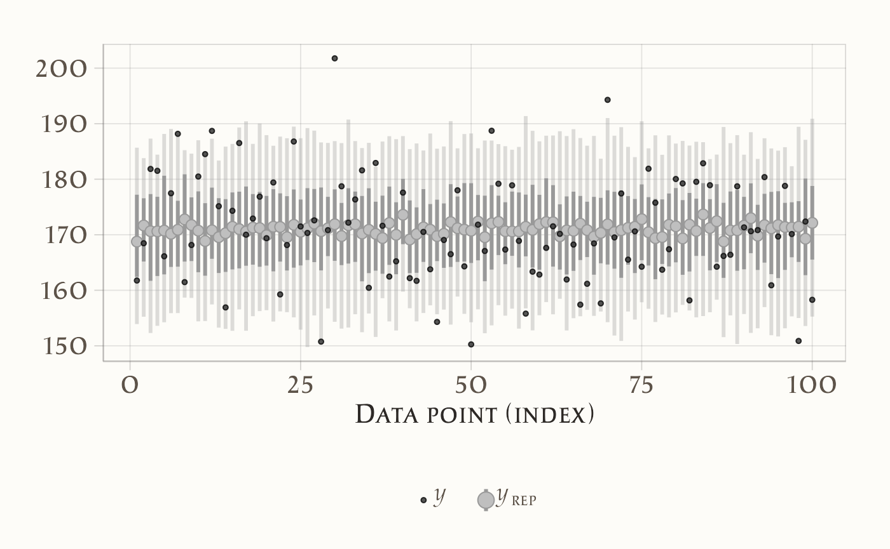
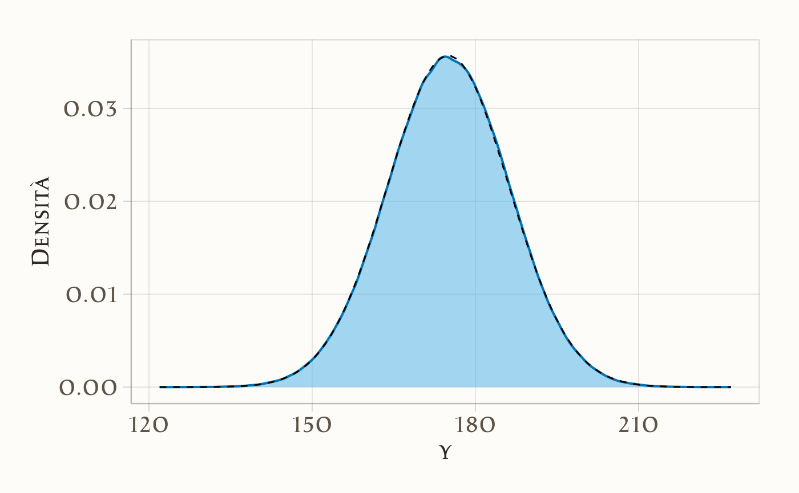

here::here("code", "_common.R") |> source()
# Carichiamo i pacchetti necessari
if (!requireNamespace("pacman")) install.packages("pacman")
pacman::p_load(cmdstanr, posterior, insight, bayesplot, ggplot2)15 Controlli predittivi bayesiani (a priori e a posteriori) con cmdstanr
Introduzione
Quando costruiamo un modello statistico, possiamo rivolgere lo sguardo in due direzioni diverse. Da un lato ci chiediamo che cosa i dati ci dicano sui parametri, ovvero qual è la distribuzione a posteriori che sintetizza la conoscenza aggiornata dopo aver osservato l’evidenza empirica. Dall’altro, possiamo domandarci che cosa il modello ci permette di prevedere riguardo a nuove osservazioni, cioè quale forma assume la distribuzione predittiva a posteriori.
Nella pratica psicologica applicata, è proprio questa seconda prospettiva a rivelarsi spesso decisiva. Lo scopo di un modello non è soltanto stimare parametri astratti, ma soprattutto fornire previsioni su come potrebbero presentarsi nuovi dati e, in particolare, mostrarci se le strutture probabilistiche che abbiamo ipotizzato sono in grado di generare esiti simili a quelli che riscontriamo nella realtà. Da qui derivano due strategie complementari. I controlli predittivi a priori consistono nel generare dati simulati prima ancora di osservare un singolo dato reale, utilizzando soltanto le assunzioni codificate nei prior. Se gli scenari prodotti appaiono manifestamente implausibili, la difficoltà non risiede nei dati, ma nelle ipotesi di partenza. I controlli predittivi a posteriori, invece, vengono effettuati dopo avere osservato i dati: a partire dalla distribuzione aggiornata dei parametri, simuliamo nuove repliche dei dati stessi e le confrontiamo con quelli reali. In questo modo verifichiamo se il modello, una volta informato dall’evidenza, è in grado di riprodurre in maniera plausibile le caratteristiche fondamentali del fenomeno studiato (Gelman et al., 2013; Johnson et al., 2022; McElreath, 2020).
Nel capitolo che segue mostreremo come realizzare operativamente questi controlli con cmdstanr. L’intento non è quello di introdurre nuova teoria, ma di acquisire familiarità con una procedura che diventerà abituale: generare dati simulati dal modello, confrontarli visivamente con i dati osservati e valutare, in modo intuitivo ma rigoroso, la coerenza complessiva delle nostre ipotesi modellistiche.
15.1 La distribuzione predittiva a posteriori
I controlli predittivi a posteriori costituiscono uno degli strumenti più efficaci per valutare la qualità di un modello bayesiano. La loro logica è semplice ma potente: se il modello è adeguato, allora i dati generati a partire dai parametri posteriori dovrebbero assomigliare, nelle loro caratteristiche essenziali, ai dati effettivamente osservati.
Il procedimento si articola in tre passaggi concettuali. In primo luogo, estraiamo campioni dei parametri dalla distribuzione a posteriori, ossia da quella distribuzione che riflette ciò che sappiamo dei parametri dopo aver osservato i dati. In secondo luogo, per ciascun campione generiamo un dataset fittizio, simulato secondo il meccanismo del modello. Infine, confrontiamo i dati simulati con quelli reali, verificando fino a che punto le repliche prodotte dal modello sono coerenti con le osservazioni empiriche.
Dal punto di vista formale, la distribuzione predittiva a posteriori si scrive come
\[ p(\tilde{y} \mid y) = \int p(\tilde{y} \mid \theta)\, p(\theta \mid y)\, d\theta , \] dove \(\theta\) rappresenta i parametri del modello, \(y\) i dati osservati e \(\tilde{y}\) i dati replicati. Nella pratica, questa integrazione viene approssimata attraverso la simulazione Monte Carlo: si campionano valori \(\theta^{(s)}\) dalla distribuzione posteriore e, per ciascuno di essi, si genera una replica \(\tilde{y}^{(s)}\) secondo il modello. Il risultato è una collezione di dataset simulati che possono essere messi a confronto diretto con i dati osservati.
L’importanza di questo strumento risiede nel fatto che esso consente di valutare il modello non soltanto in termini di stima dei parametri, ma in termini di capacità generativa. In altri termini, un modello può produrre stime dei parametri apparentemente ragionevoli e tuttavia rivelarsi inadeguato quando si tratta di riprodurre la variabilità o la struttura dei dati. I controlli predittivi a posteriori ci permettono di rilevare queste discrepanze, guidandoci verso una revisione delle assunzioni modellistiche quando necessario.
15.1.1 Esempio: il modello normale–normale
Per comprendere in maniera concreta il funzionamento dei controlli predittivi, è utile partire da un caso estremamente semplice, ma didatticamente chiaro: il modello normale–normale. Immaginiamo di voler stimare l’altezza media di una popolazione. Decidiamo di descrivere la nostra incertezza a priori assumendo che la media \(\mu\) segua una distribuzione normale con media \(\mu_0\) e varianza \(\tau_0^2\). Gli individui osservati, invece, sono considerati come realizzazioni di una distribuzione normale centrata su \(\mu\) e con varianza nota \(\sigma^2\).
Formalmente, il modello può essere espresso così:
\[ \mu \sim \mathcal{N}(\mu_0, \tau_0^2), \qquad y_i \sim \mathcal{N}(\mu, \sigma^2). \]
In questo contesto, la distribuzione predittiva a posteriori per una nuova osservazione \(\tilde{y}\) assume la forma
\[ \tilde{y} \mid Y \sim \mathcal{N}\!\big(\mu_n, \; \tau_n^2 + \sigma^2 \big), \] dove \(\mu_n\) e \(\tau_n^2\) rappresentano rispettivamente la media e la varianza della distribuzione a posteriori di \(\mu\).
Questa espressione mostra che la nuova osservazione attesa non dipende soltanto dalla varianza campionaria, ma anche dall’incertezza residua sulla stima della media. Tuttavia, il punto cruciale non è tanto la formula in sé, quanto la possibilità di realizzare simulazioni dirette. Grazie a esse possiamo generare dati fittizi dal modello e confrontarli con i dati reali, verificando in modo intuitivo se la nostra rappresentazione probabilistica è in grado di cogliere i tratti caratteristici del fenomeno osservato.
15.1.2 Implementazione con Stan
Per tradurre queste idee in pratica, costruiamo un semplice modello in Stan, che chiameremo normal_pred.stan. L’obiettivo è duplice: da un lato vogliamo simulare dati a partire soltanto dalle assunzioni iniziali, quindi senza alcuna informazione empirica; dall’altro desideriamo generare dati replicati dopo aver aggiornato le nostre credenze con i dati osservati. In altre parole, lo stesso modello può essere usato sia per i controlli a priori sia per quelli a posteriori, a seconda di come impostiamo i dati di input.
Il codice Stan è strutturato in modo da riflettere questa distinzione. Nel blocco data specifichiamo il numero di osservazioni, il vettore dei dati (che può anche essere ignorato in caso di prior predictive), i parametri del prior e un indicatore logico (prior_only) che decide se utilizzare o meno i dati osservati. Nel blocco parameters dichiariamo la media \(\mu\), mentre nel blocco model definiamo il prior e, se richiesto, la verosimiglianza dei dati osservati. Infine, nel blocco generated quantities generiamo una nuova osservazione simulata, che rappresenta la replica dei dati secondo il modello.
Questo approccio, apparentemente minimale, è estremamente utile in ottica didattica: consente di vedere chiaramente come cambiano le simulazioni se utilizziamo soltanto le ipotesi iniziali oppure se lasciamo che siano i dati a informare la distribuzione dei parametri. In entrambi i casi, il cuore del procedimento resta invariato: generare dati dal modello e metterli a confronto con ciò che abbiamo osservato nella realtà.
data {
int<lower=0> N;
vector[N] y;
real mu0;
real<lower=0> tau0;
real<lower=0> sigma;
int<lower=0,upper=1> prior_only;
}
parameters {
real mu;
}
model {
mu ~ normal(mu0, tau0); // prior
if (prior_only == 0)
y ~ normal(mu, sigma); // likelihood (solo se usiamo i dati)
}
generated quantities {
real y_rep;
y_rep = normal_rng(mu, sigma); // generiamo una nuova osservazione
}15.1.3 Codice R
Dopo aver definito il modello in Stan, possiamo passare alla sua applicazione concreta in R. Immaginiamo di simulare un campione di cento altezze, con media pari a 170 centimetri e deviazione standard di 10. Questi dati fungeranno da base per verificare il comportamento del nostro modello.
Prepariamo dunque la lista dei dati da passare a Stan. Oltre al vettore delle osservazioni, specifichiamo i parametri del prior: una media a priori di 175 centimetri, una deviazione standard a priori di 5 e una deviazione standard nota dei dati pari a 10. Infine, fissiamo il valore dell’indicatore prior_only a zero, in modo da utilizzare effettivamente i dati osservati e non limitarci a una simulazione puramente a priori.
A questo punto possiamo compilare il modello e lanciare la procedura di campionamento. Con cmdstanr il flusso di lavoro è lineare: si richiama la funzione cmdstan_model() indicando il file Stan e poi si esegue $sample() con i dati appena preparati. Il risultato è un oggetto che contiene i campioni dalla distribuzione a posteriori dei parametri e le repliche dei dati, pronto per essere analizzato e visualizzato.
Questo passaggio segna il momento in cui il modello teorico prende vita: da semplici equazioni passiamo a un insieme di simulazioni concrete, attraverso cui possiamo verificare se le assunzioni di partenza riescono a tradursi in previsioni compatibili con i dati empirici.
15.1.4 Visualizzazione: Posterior Predictive Checks
Una volta ottenuti i campioni posteriori, possiamo verificare se il modello è in grado di generare dati “verosimili” rispetto a quelli osservati. L’idea operativa è semplice: per ciascun draw dei parametri dal posteriore, il modello produce una replica dell’intero dataset; mettendo a confronto molte repliche con i dati reali, giudichiamo la coerenza tra ipotesi e fenomeno.
Per usare le funzioni ppc_*() di bayesplot, è essenziale che Stan restituisca, ad ogni draw, un vettore di repliche lungo N (una per ciascuna osservazione). In termini Stan, in generated quantities deve esserci qualcosa come vector[N] y_rep;. Se nel tuo file hai definito un solo scalare (ad esempio real y_rep;), le funzioni ppc_*() non avranno la struttura attesa: occorre quindi che il modello generi tante repliche quante sono le osservazioni. Con questa premessa, possiamo estrarre le repliche e procedere ai controlli grafici.
Nel nostro esempio, estraiamo yrep dall’oggetto fit (ottenuto con cmdstanr) in forma di matrice. Ogni riga rappresenta un dataset replicato per intero, ogni colonna corrisponde a una delle N osservazioni originarie. Se hai quattro catene e mille iterazioni utili per catena, otterrai circa 4000 righe.
yrep <- fit$draws("y_rep", format = "matrix")Per un dataset con N = 100 osservazioni e S = 4000 repliche, yrep avrà dimensioni:
dim(yrep) # [4000, 100]
#> [1] 4000 100Questa struttura [S, N] è quella richiesta da bayesplot. Le colonne identificano le posizioni dei dati originali; le righe sono interi dataset “fittizi” generati dal modello ai diversi draw posteriori. Con questa organizzazione, ogni grafico PPC può confrontare in modo coerente osservazioni e repliche.
Un primo controllo molto informale, ma spesso rivelatore, è la sovrapposizione delle densità: tracciamo la densità empirica dei dati osservati e la confrontiamo con un gruppo di densità simulate dalle repliche. Per evitare un eccesso di linee, usiamo solo le prime cinquanta repliche; il numero è arbitrario, ma sufficiente per far emergere eventuali discrepanze grossolane.
ppc_dens_overlay(y, yrep[1:50, ])
Nel grafico, la linea scura rappresenta la distribuzione empirica di y, mentre le linee più chiare sono le densità delle repliche simulate. Se il modello è ragionevole, le densità simulate “abbracciano” quella osservata: non devono coincidere in ogni dettaglio, ma ne devono riprodurre posizione, dispersione e forma generale. Se, al contrario, tutte o quasi tutte le repliche risultano più strette, più larghe, o sistematicamente spostate, il modello sta fallendo nel cogliere un tratto saliente della distribuzione.
Possiamo poi rivolgerci a controlli più mirati su statistiche riassuntive. Ad esempio, verificare se la media dei dati simulati è compatibile con la media osservata è un test di coerenza di base sulla tendenza centrale. bayesplot calcola la statistica su ciascuna replica e ne mostra la distribuzione, mettendola accanto al valore osservato:
ppc_stat(y, yrep, stat = "mean")
Se il punto corrispondente alla media osservata si colloca in un’area plausibile della distribuzione delle medie simulate (ad esempio vicino al centro o comunque non in coda estrema), il modello non sta introducendo un bias evidente sulla posizione. Se invece il valore osservato cade regolarmente nelle code, il modello tende a sovra- o sotto-stimare la media.
Un controllo complementare riguarda la variabilità puntuale: gli intervalli predittivi per ciascuna osservazione ci dicono se la dispersione generata dal modello è compatibile con l’ampiezza delle fluttuazioni empiriche. Il grafico seguente visualizza, per le prime cento osservazioni, gli intervalli credibili delle repliche e sovrappone i corrispondenti valori osservati:
ppc_intervals(y, yrep[1:100, ])
Quando la maggior parte dei punti osservati cade all’interno delle bande predittive, possiamo dire che la dispersione generata dal modello è adeguata; se molti punti si collocano sistematicamente fuori, o tutti molto vicino al bordo, il modello sta sottostimando o sovrastimando l’incertezza. Questo tipo di grafico è particolarmente utile quando sospetti eteroschedasticità o quando vuoi individuare regioni del dominio in cui il modello fallisce più spesso.
L’interpretazione di questi controlli è sempre di natura generativa: non stiamo testando l’importanza di un coefficiente, ma verificando che l’intero meccanismo probabilistico sia capace di riprodurre gli aspetti essenziali dei dati. Se la forma delle distribuzioni simulate è incompatibile con quella osservata, se le statistiche riassuntive risultano sistematicamente spostate, o se le bande predittive non coprono i punti osservati in modo plausibile, la conclusione non è “il modello è falso” in senso assoluto, ma “il modello, così specificato, non genera dati con le caratteristiche che vediamo”. In quel caso, la diagnosi va ricercata nelle assunzioni: prior troppo stretti o troppo larghi, verosimiglianza mal specificata (ad esempio una normale con code troppo leggere dove servirebbe una t-student), varianza fissata quando dovrebbe essere stimata, o una struttura mancante (trend, effetti gerarchici, dipendenze nel tempo) che i dati sembrano richiedere.
In sintesi, i PPC spostano l’attenzione dalla stima dei parametri alla capacità predittiva del modello come generatore di dati. È questa la domanda che conta quando il modello deve essere usato per comprendere e prevedere fenomeni psicologici: il processo probabilistico che abbiamo ipotizzato “sa fare” dati che assomigliano, per struttura e variabilità, a quelli del mondo reale?
15.2 Distribuzione predittiva a priori
Prima ancora di raccogliere un singolo dato, possiamo chiederci che tipo di osservazioni ci aspetteremmo se il mondo fosse davvero descritto dalle nostre assunzioni iniziali. Questa è l’idea dei controlli predittivi a priori: generare dati fittizi soltanto dai prior, senza alcuna informazione empirica, e verificare se questi scenari risultano plausibili alla luce della nostra conoscenza di dominio.
L’obiettivo non è predire con esattezza i dati reali, ma controllare che i prior non ci conducano in regioni assurde o incoerenti. Se, per esempio, i dati simulati suggerissero altezze negative, valori esageratamente grandi o dispersioni completamente fuori scala, potremmo concludere che il problema non sta nei dati, ma nelle nostre ipotesi iniziali.
In termini pratici, questo controllo si traduce in un procedimento molto semplice: campioniamo i parametri direttamente dalla distribuzione a priori e li utilizziamo per generare repliche di dati sintetici attraverso lo stesso meccanismo probabilistico del modello. Così facendo, otteniamo un insieme di dataset simulati che possono essere confrontati con ciò che consideriamo realistico in quel contesto.
15.2.1 Implementazione in Stan
Per i controlli a priori, il file Stan può essere ridotto all’essenziale. Non servono blocchi di parametri o di modello: i parametri vengono campionati direttamente nel blocco generated quantities tramite funzioni _rng. L’esecuzione avviene con l’opzione fixed_param=TRUE, che dice a Stan di ignorare il sampling MCMC e di limitarsi a produrre simulazioni casuali.
// file: normal_prior_predictive.stan
data {
int<lower=0> N; // dimensione della replica che vuoi generare
vector[N] y; // ignorato (può essere numeric(0) o un vettore qualsiasi)
real mu0; // media a priori di mu
real<lower=0> tau0; // dev. standard a priori di mu
real<lower=0> sigma; // dev. standard nota dei dati
}
generated quantities {
real mu_prior; // un draw del parametro dal prior
vector[N] y_rep; // una replica completa (lunghezza N)
mu_prior = normal_rng(mu0, tau0);
for (n in 1:N) {
y_rep[n] = normal_rng(mu_prior, sigma);
}
}In questo modo, ogni draw produce un valore casuale del parametro \(\mu\) dal prior e un dataset simulato di lunghezza N. È un’implementazione volutamente minimale, che mette in evidenza la logica del procedimento.
15.2.2 Codice R
Passiamo ora a R. Per semplicità, chiediamo di generare repliche di lunghezza N = 200. I dati reali non servono, quindi possiamo passare un vettore fittizio di zeri al posto di y.
Compiliamo quindi il modello e lanciamo il campionamento. Poiché abbiamo specificato fixed_param=TRUE, Stan non stimerà nulla, ma genererà soltanto simulazioni casuali a partire dai prior.
mod_prior <- cmdstan_model(here::here("stan", "normal_prior_predictive.stan"))
fit_prior <- mod_prior$sample(
data = stan_data_prior,
chains = 4,
iter_sampling = 1000,
iter_warmup = 0,
fixed_param = TRUE, # fondamentale per prior predictive
refresh = 0,
seed = 123
)15.2.3 Analisi dei risultati
Il risultato di questa simulazione è un insieme di repliche y_rep, organizzate in una matrice con una riga per ogni draw. Possiamo estrarle e metterle in un dataframe per un’ispezione grafica.
yrep_mat <- as_draws_matrix(fit_prior$draws("y_rep"))
df_mc <- data.frame(x = as.numeric(yrep_mat)) # vettore lungo S*NConfrontiamo ora la distribuzione empirica ottenuta via Monte Carlo con quella attesa dal calcolo analitico. Nel modello normale–normale, la deviazione standard della distribuzione predittiva a priori è data da
\[ \sqrt{\tau_0^2 + \sigma^2}. \]
Con i valori scelti (\(\tau_0 = 5\), \(\sigma = 10\)), otteniamo una deviazione standard predittiva di circa 11.18. Possiamo usare questa quantità per confrontare le code della distribuzione simulata con quelle della distribuzione normale teorica:
Infine, possiamo visualizzare la distribuzione simulata sovrapponendola alla curva normale analitica attesa:
ggplot(df_mc, aes(x = x)) +
geom_density() +
stat_function(fun = dnorm,
args = list(mean = 175, sd = sd_prior_pred),
linetype = 2) +
labs(x = "y", y = "Densità")
In questo grafico, la curva tratteggiata rappresenta la distribuzione normale teorica corrispondente ai prior, mentre la curva continua mostra la distribuzione empirica ricavata dalle simulazioni Monte Carlo. La sovrapposizione fra le due conferma che il procedimento sta funzionando come previsto.
15.2.4 Come interpretare
L’interpretazione dei controlli a priori segue una logica molto semplice: ci chiediamo se i dati simulati abbiano senso rispetto alla nostra conoscenza del problema. Se le repliche risultano sistematicamente più alte o più basse del range plausibile, allora il prior sulla media \(\mu\) è mal calibrato. Se la variabilità appare eccessiva o troppo limitata, è necessario rivedere l’ampiezza del prior. L’obiettivo non è vincolare il modello a produrre dati “giusti”, ma evitare assunzioni così irrealistiche da rendere il modello inutilizzabile già prima di osservare i dati.
In breve, il controllo predittivo a priori è un test di buon senso: ci permette di accorgerci subito se i nostri prior stanno spingendo il modello verso scenari che sappiamo non avere alcuna plausibilità empirica. Meglio scoprirlo a questo stadio, piuttosto che dopo aver speso tempo e risorse in stime inutilmente complicate.
Riflessioni conclusive
I controlli predittivi a priori e a posteriori rappresentano due momenti distinti, ma complementari, nel processo di modellizzazione bayesiana. La distribuzione predittiva a priori ci permette di verificare se le assunzioni iniziali, tradotte nei prior, siano ragionevoli rispetto alla conoscenza di dominio. In questa fase, la domanda cruciale non riguarda la corrispondenza con i dati osservati, ma la plausibilità degli scenari generati: i valori simulati hanno senso? si collocano in un range realistico? riflettono un ordine di grandezza compatibile con il fenomeno?
La distribuzione predittiva a posteriori, invece, mette alla prova la capacità del modello di riprodurre le caratteristiche essenziali dei dati una volta incorporata l’evidenza empirica. Qui non si tratta più soltanto di buon senso, ma di valutare se il meccanismo probabilistico che abbiamo ipotizzato sia in grado di generare dati che assomigliano, nelle loro proprietà fondamentali, a quelli osservati. Un modello che fallisce sistematicamente in questa prova mostra i limiti delle proprie assunzioni e segnala la necessità di una revisione.
Entrambe le procedure si basano sulla stessa idea operativa: generare dati simulati dal modello e confrontarli, in modo visivo e quantitativo, con i dati reali o con ciò che sappiamo del fenomeno. Non si tratta di una validazione definitiva — nessun modello può dirsi “vero” o “falso” sulla base di un singolo controllo grafico — ma di un passaggio essenziale per diagnosticare incoerenze macroscopiche e per orientare la costruzione di modelli più adeguati.
In questo senso, i controlli predittivi non vanno intesi come un’aggiunta opzionale, ma come una fase imprescindibile del workflow bayesiano. Solo dopo aver verificato la plausibilità dei prior e la coerenza predittiva del modello, ha senso procedere verso forme più raffinate di confronto, come la stima dell’ELPD o la cross-validazione LOO. I controlli predittivi costituiscono quindi una sorta di “porta di ingresso” alla valutazione del modello: un controllo immediato, intuitivo e al tempo stesso rigoroso, capace di rivelare a colpo d’occhio se siamo sulla strada giusta o se le nostre assunzioni necessitano di essere riconsiderate.
Bibliografia
Gelman, A., Carlin, J. B., Stern, H. S., Dunson, D. B., Vehtari, A., & Rubin, D. B. (2013). Bayesian Data Analysis (3rd ed.). Chapman; Hall/CRC.
Johnson, A. A., Ott, M., & Dogucu, M. (2022). Bayes Rules! An Introduction to Bayesian Modeling with R. CRC Press.
McElreath, R. (2020). Statistical rethinking: A Bayesian course with examples in R and Stan (2nd Edition). CRC Press.